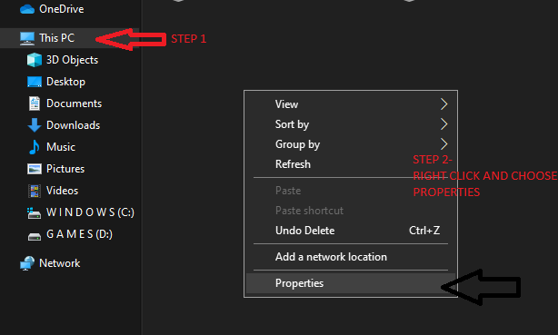
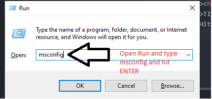
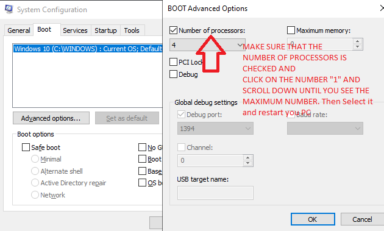
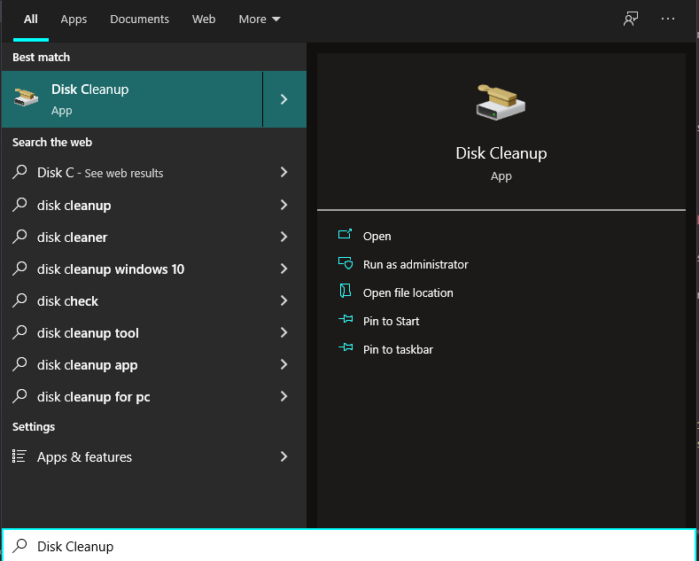

First, Check your pc specifications.
For doing this, you need to go to your file explorer --> This Pc --> Right Click and choose "PROPERTIES" Check the below for some help

Hit WINDOWSkey +Rand type msconfig to open Ms Config or Microsoft Configuration and hit ENTER
This opens the System Configuration App. After that, select BOOT TAB and click on Advanced Options and make sure that NUMBER OF PROCESSORS IS ENABLEDand restart your pc if needed
This step helps in making sure that all your processors are enabled for functioning :D
Open the START meny by pressing WINDOWSkey and then type Disk Cleanup
Select the C Driveand Click "OK". After clicking ok, it will automatically scan for any junk files in your pc.
After Scanning, It will show some pop up in which makesure that all of the items are checked and then click on the OKbutton
This step and also a few other steps below will help in removing Junk Files from your pc.
Again open the Run command by presing WINDOWS KEY + Rand then type- This opens File Explorer. The window will have files that aren't required for your pc. Temp stands for TEMPORARY. Those files are the files that are temporary or files that aren't needed for your pc. The big number of files, the slower your pc gets. Do the same process for